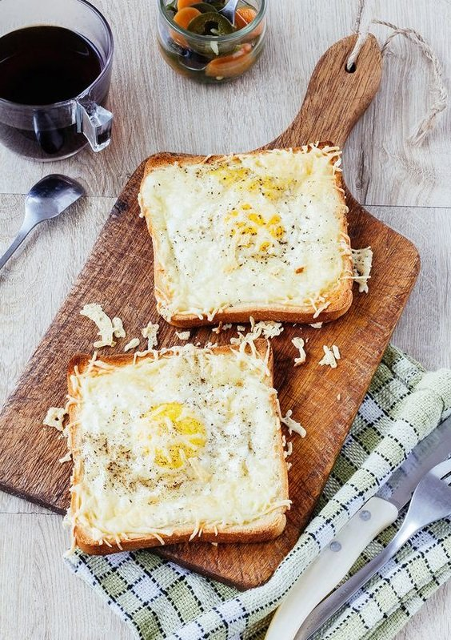
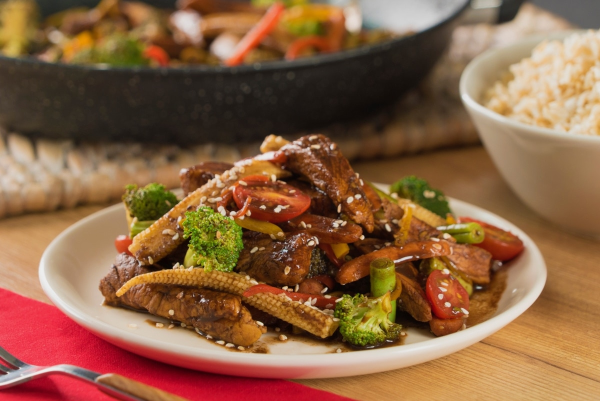
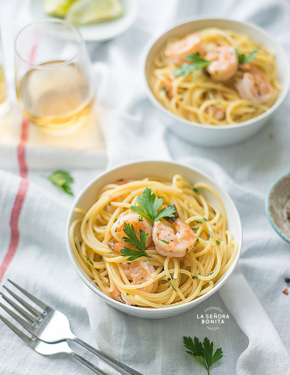
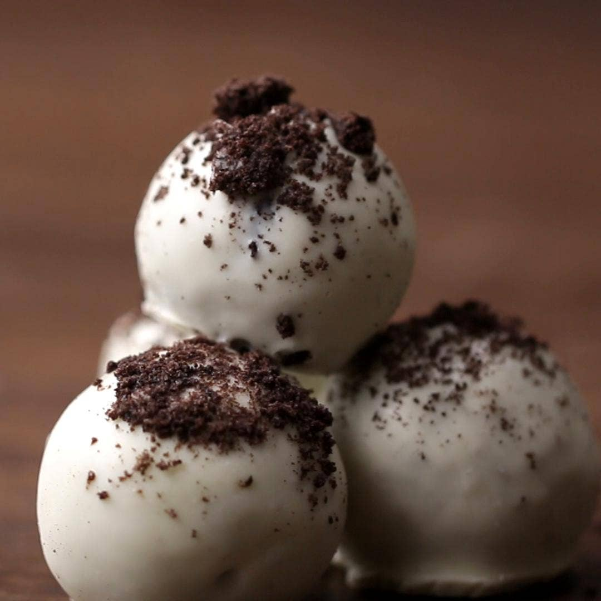

¿QUIENES SOMOS?
Fresco y tostado es un sitio web de recetas de cocina, con el objetivo de traer la calidez de la cuchara de la abuela con recetas fáciles de hacer para aquellas personas que no tengan ningún dote a la cocina. El sitio tiene diferentes categorías: Desayunos, almuerzos, cenas y postres, que se refieren a los diferentes tiempos de comida durante el día.
Fresco y tostado, esta de la mano de dos amigas que desde pequeñas les encanta preparar, compartir y sorprender con recetas deliciosas, que sean versátiles hasta para aquellos que no saben nada de cocina. Desde un brunch mañanero hasta una cena con velas, fresco y tostado busca formar una comunidad de amantes por la buena comida, el cual cocinando coleccionen momentos e historias, sin los tecnicismos de cómo cocinar bien.
Desayuno
Tostada de huevo con queso
Ingredientes para 1 tostada
1 rebanada de pan
½ cucharada de mantequilla
1 huevo
3 cucharadas de queso rallado
Sal al gusto
Pimienta al gusto
Preparación
Con una cuchara, presione hacia abajo en el centro del pan para formar un bolsillo.
Cubra los bordes del pan con mantequilla y rompa un huevo en el bolsillo.
Cubra los bordes del pan con queso rallado.
Espolvoree sal y pimienta y hornee a 400 ° F (204 ° C) durante 10-15 min. 10 min tendrán una yema líquida, mientras que 15 min tendrán una yema más firme
¡Disfrutar!
Almuerzo
Pollo y vegetales balsámicos
Ingredientes para 2 porciones
¼ taza de aderezo para ensaladas italianas( 250 ml )
3 cucharadas de vinagre balsámico
1 ½ cucharada de miel
⅛ cucharadita de hojuelas de pimiento rojo
1 libra de pechuga de pollo( 455 g )
2 cucharadas de aceite de oliva
sal al gusto
pimienta al gusto
1 libra de espárragos frescos( 455 g ), sin extremos duros, picada en trozos de 2 pulgadas / 5 cm
1 ½ tazas de zanahoria( 185 g )
1 taza de tomates uva( 200 g ), reducido a la mitad
Preparación
En un tazón, mezcle el aderezo para ensaladas, el vinagre balsámico, la miel y las hojuelas de pimiento rojo, reserve.
Sazona el pollo con sal y pimienta.
Cocine las pechugas de pollo por un lado durante 10 minutos y luego déles la vuelta. Agregue la mitad de la mezcla de aderezo y cocine por otros 10 minutos. Los jugos de pollo deben salir claros. Deja el pollo a un lado.
Agregue los espárragos, las zanahorias y los tomates a la misma sartén, sazone con sal y pimienta, revuelva con frecuencia hasta que las verduras estén tiernas, aproximadamente 4 minutos. Plato de verduras y pollo.
Agregue la mezcla de aderezo restante a la sartén y reduzca durante aproximadamente un minuto, hasta que la salsa espese. Viste el pollo y las verduras con la salsa.
¡Disfrutar!
Cena
Pasta de camarones con ajo y limón
Ingredientes para 4 porciones
8 onzas de linguini ( 225 g )
2 cucharadas de aceite de oliva
8 cucharadas de mantequilla sin sal, 1 barra
4 dientes de ajo picados
1 cucharadita de hojuelas de pimiento rojo
1 ¼ lb de camarones grandes( 570 g )
sal al gusto
pimienta al gusto
1 cucharadita de orégano seco
4 tazas de espinacas tiernas( 160 g )
¼ taza de queso parmesano( 25 g ), rallado
2 cucharadas de perejil fresco picado
1 cucharada de jugo de limón
Preparación
En una olla grande, hierva el agua y agregue la pasta. Cocine (revolviendo con frecuencia) hasta que esté al dente.
Escurrir y reservar la pasta.
En la misma sartén, caliente el aceite de oliva y 2 cucharadas de mantequilla. Agregue el ajo y el pimiento rojo triturado, cocine hasta que esté fragante.
Agregue los camarones, sal y pimienta al gusto, y revuelva hasta que los camarones comiencen a ponerse rosados, pero no estén completamente cocidos.
Agregue el orégano y la espinaca, cocine hasta que se ablanden.
Regrese la pasta cocida a la olla, agregue la mantequilla restante, el parmesano y el perejil. Revuelva hasta que esté bien mezclado y la mantequilla se derrita.
Cuando los camarones estén cocidos, agregue jugo de limón, mezcle una vez más, luego sirva mientras está caliente.
Postres
Postre Fácil De Galletas Y Trufas De Crema
Ingredientes
36 galletas sándwich de chocolate
8 oz de queso crema( 225 g ), ablandado
12 oz de chocolate blanco( 340 g ), Derretido
Preparación
En un procesador de alimentos, tritura finamente las galletas, reservando unas 2 cucharadas de la mezcla para espolvorear sobre las trufas.
En un tazón grande, combine las migas de galleta y el queso crema, revolviendo hasta que se mezclen uniformemente. Enfríe la mezcla durante aproximadamente una hora o hasta que se pueda enrollar en una bola y mantener su forma.
Divida y enrolle la mezcla en bolas del tamaño de una pelota de golf. Sumerja las trufas en el chocolate blanco derretido y colóquelas en una bandeja para hornear forrada con papel pergamino. Espolvorea las migas de galleta reservadas sobre las trufas antes de que el chocolate se endurezca.
¡Disfrutar!